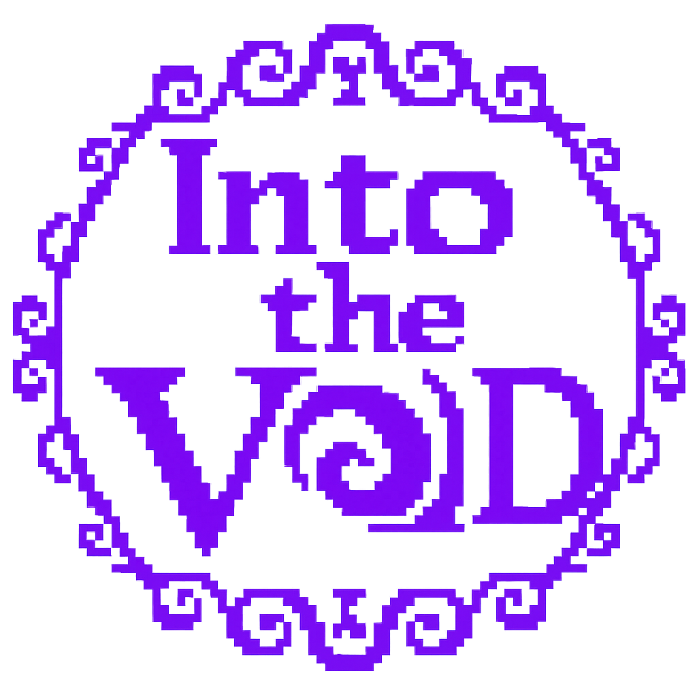

A roguelike co-op dungeon crawling odyssey
The Void Throne is shattered. A maw of nonexistence tears at the heart of Oreithyia's Palace. Ancient artifacts, forgotten lore, and untold power lie within — guarded by a god who never rests.
Twelve eras of history. Billions of years of conflict. One timeline to explore.
Explore the Timeline